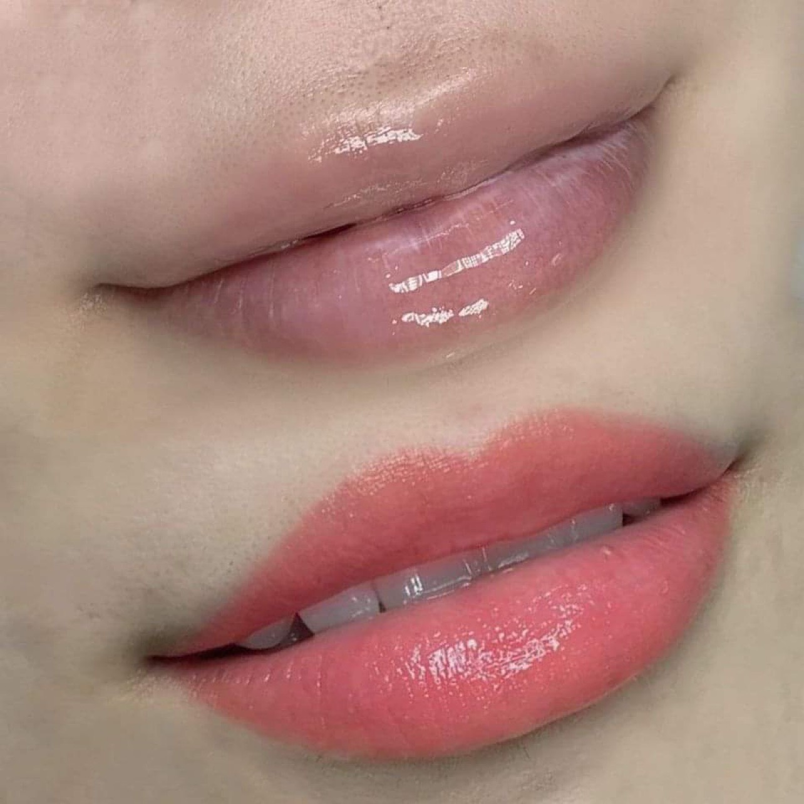
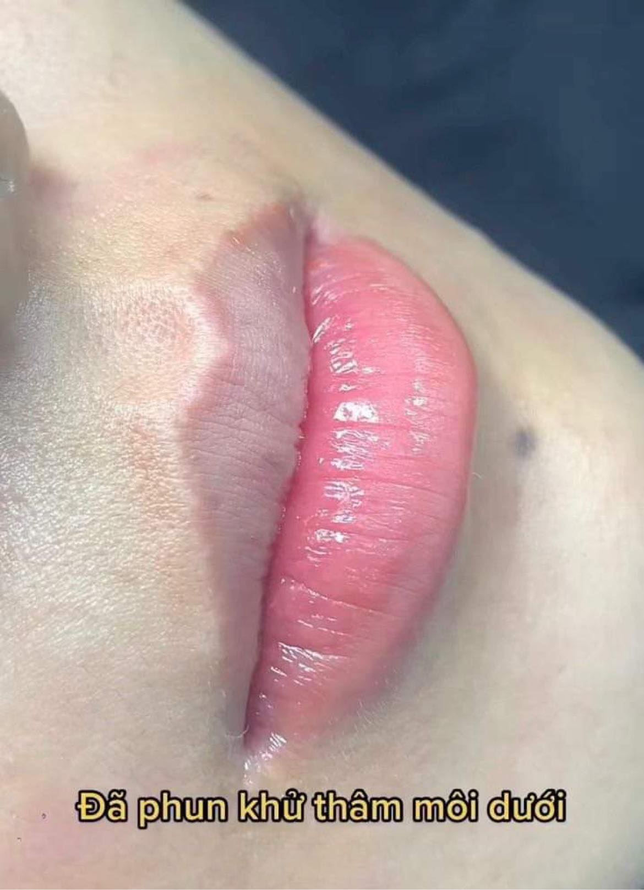

Khử Thâm Môi Là Gì? Giải Pháp Giúp Đôi Môi Tươi Tắn Hơn
Môi thâm là tình trạng khá phổ biến khiến nhiều người cảm thấy thiếu tự tin khi giao tiếp hoặc phải sử dụng son môi hằng ngày. Bên cạnh các phương pháp chăm sóc tại nhà, khử thâm môi đang trở thành lựa chọn được nhiều khách hàng quan tâm nhờ khả năng cải thiện màu môi và giúp đôi môi trông tươi tắn hơn.
Vậy khử thâm môi là gì, có phù hợp với mọi người hay không và cần lưu ý những gì trước khi thực hiện? Hãy cùng ELLY PMU tìm hiểu chi tiết trong bài viết dưới đây.
Khử Thâm Môi Là Gì?
Khử thâm môi là kỹ thuật cải thiện sắc tố môi bị sẫm màu bằng phương pháp phun xăm thẩm mỹ phù hợp với từng tình trạng môi. Mục tiêu của phương pháp này là hỗ trợ cải thiện nền môi thâm, giúp màu môi đều hơn, tạo nền môi thuận lợi cho việc phun màu nếu cần và mang lại vẻ ngoài tươi tắn, tự nhiên hơn.
Tùy theo tình trạng môi, kỹ thuật viên sẽ tư vấn quy trình phù hợp. Có khách chỉ cần khử thâm nhẹ, có khách cần xử lý nền môi trước rồi mới chọn màu phun để kết quả sau bong đẹp và bền hơn.
Nguyên Nhân Khiến Môi Bị Thâm
Bẩm sinh
Một số người có sắc tố môi đậm ngay từ nhỏ. Trường hợp này thường cần được đánh giá kỹ trước khi chọn màu.
Ánh nắng mặt trời
Tiếp xúc thường xuyên với tia UV mà không bảo vệ môi có thể khiến sắc tố môi thay đổi theo thời gian.
Hút thuốc lá
Nicotine và các chất trong thuốc lá có thể làm môi sẫm màu, khô và kém tươi hơn.
Son môi kém chất lượng
Việc sử dụng mỹ phẩm không rõ nguồn gốc hoặc không phù hợp có thể ảnh hưởng đến màu môi.
Thiếu chăm sóc môi
Môi thường xuyên khô, nứt nẻ cũng có thể khiến màu môi trông kém tươi tắn.


Những Ai Nên Khử Thâm Môi?
Khử thâm môi có thể phù hợp với người có môi thâm bẩm sinh, môi không đều màu, môi bị sẫm sau thời gian dài sử dụng son hoặc muốn cải thiện màu môi trước khi phun màu. Để biết chính xác mình có phù hợp hay không, bạn nên được kỹ thuật viên đánh giá trực tiếp.
Khử Thâm Môi Có Đau Không?
Hiện nay, trước khi thực hiện thường sẽ có bước ủ tê nên đa số khách hàng chỉ cảm thấy châm chích nhẹ. Mức độ cảm nhận sẽ khác nhau tùy cơ địa và ngưỡng chịu đau của mỗi người.
Khử Thâm Môi Có Hiệu Quả Không?
Hiệu quả phụ thuộc vào nhiều yếu tố như mức độ thâm ban đầu, cơ địa, tay nghề kỹ thuật viên, chất lượng mực, thiết bị và cách chăm sóc sau thực hiện. Kỹ thuật viên sẽ tư vấn kỳ vọng phù hợp với từng trường hợp thay vì đưa ra cam kết giống nhau cho mọi khách hàng.
Quy Trình Khử Thâm Môi Thường Diễn Ra Như Thế Nào?
Thông thường, kỹ thuật viên sẽ bắt đầu bằng bước kiểm tra nền môi mộc. Đây là bước rất quan trọng vì mỗi nền môi có sắc tố khác nhau: có người thâm viền, có người thâm toàn môi, có người môi tím lạnh hoặc nâu sẫm.
Sau khi đánh giá, kỹ thuật viên sẽ tư vấn phương án phù hợp, vệ sinh vùng môi, ủ tê và tiến hành xử lý sắc tố bằng kỹ thuật phù hợp. Cuối cùng, khách hàng sẽ được hướng dẫn cách chăm sóc tại nhà để môi hồi phục ổn định.
Khử Thâm Xong Có Cần Phun Màu Không?
Không phải ai cũng bắt buộc phải phun màu ngay sau khi khử thâm. Một số khách hàng chỉ cần cải thiện nền môi để môi nhìn sáng và đều hơn. Một số trường hợp khác sẽ đẹp hơn nếu sau khi nền môi ổn định, kỹ thuật viên tiếp tục tư vấn màu phù hợp như hồng đào, cam đào, hồng đất hoặc đỏ cam.
Nếu môi thâm nhiều, việc vội vàng chọn màu quá sáng có thể khiến màu sau bong không như mong muốn. Vì vậy, ELLY PMU thường ưu tiên đánh giá nền môi thật trước rồi mới quyết định có nên phun màu trực tiếp hay chia thành lộ trình.
Những Ai Nên Cân Nhắc Trước Khi Thực Hiện?
Bạn nên trao đổi kỹ với kỹ thuật viên hoặc bác sĩ nếu môi đang viêm, nứt nẻ nặng, có vết thương hở, đang gặp vấn đề da liễu quanh môi hoặc có tiền sử dị ứng với sản phẩm làm đẹp. Với phụ nữ đang mang thai hoặc đang điều trị bệnh lý đặc biệt, nên ưu tiên an toàn và tham khảo ý kiến chuyên môn trước khi quyết định.
Chăm Sóc Sau Khi Khử Thâm
Để môi hồi phục tốt hơn, bạn nên giữ môi sạch, dưỡng môi theo hướng dẫn, không bóc lớp bong, uống đủ nước và hạn chế hút thuốc. Việc chăm sóc sau khi thực hiện vẫn đóng vai trò quan trọng trong quá trình hồi phục và ổn định màu môi.
Những Hiểu Lầm Thường Gặp
Khử thâm một lần là hết hoàn toàn?
Không phải trường hợp nào cũng giống nhau. Tùy nền môi và cơ địa, kỹ thuật viên sẽ tư vấn lộ trình phù hợp.
Môi càng thâm càng dễ khử?
Không đúng. Những trường hợp thâm nhiều thường cần được đánh giá kỹ hơn trước khi thực hiện.
Sau khử thâm không cần chăm sóc?
Không đúng. Chăm sóc đúng cách giúp môi hồi phục ổn định và hạn chế tình trạng lên màu không đều.
Checklist Trước Khi Khử Thâm
Chọn cơ sở uy tín, có kinh nghiệm xử lý nền môi thâm.
Đánh giá đúng tình trạng môi trước khi quyết định.
Không tự xử lý thâm môi tại nhà bằng sản phẩm không rõ nguồn gốc.
Thực hiện theo hướng dẫn của kỹ thuật viên.
Chăm sóc môi đúng cách sau khi làm.
Câu Hỏi Thường Gặp
Môi thâm bẩm sinh có khử được không?
Nhiều trường hợp có thể cải thiện, tuy nhiên cần được đánh giá trực tiếp để lựa chọn phương pháp phù hợp.
Sau khử thâm có cần phun màu không?
Tùy nhu cầu và tình trạng môi. Một số khách chỉ khử thâm, trong khi một số khác lựa chọn phun màu sau khi nền môi đã được cải thiện.
Bao lâu môi ổn định?
Thời gian hồi phục khác nhau ở mỗi người và phụ thuộc vào cơ địa cũng như cách chăm sóc.
Khử thâm môi có hiệu quả không?
Có thể cải thiện rõ nếu đánh giá đúng nền môi, thực hiện đúng kỹ thuật và chăm sóc đúng hướng dẫn.
Kết Luận
Khử thâm môi là giải pháp giúp cải thiện sắc tố môi và mang lại đôi môi tươi tắn hơn nếu được thực hiện đúng kỹ thuật. Điều quan trọng là lựa chọn cơ sở uy tín, được tư vấn đúng tình trạng môi và tuân thủ hướng dẫn chăm sóc sau khi thực hiện.